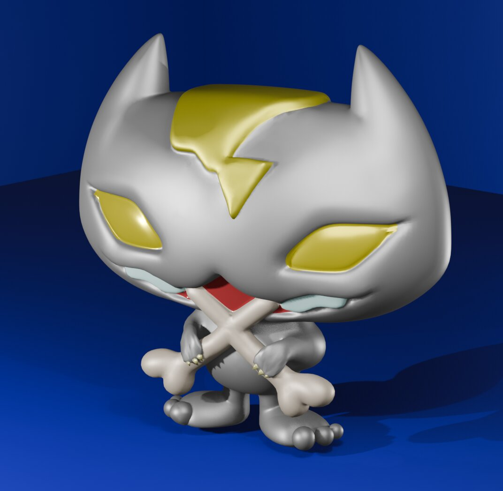
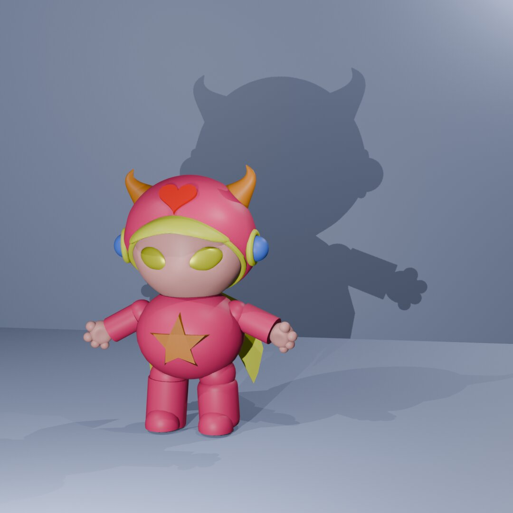
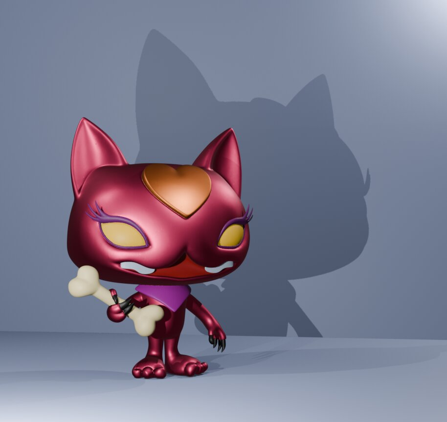
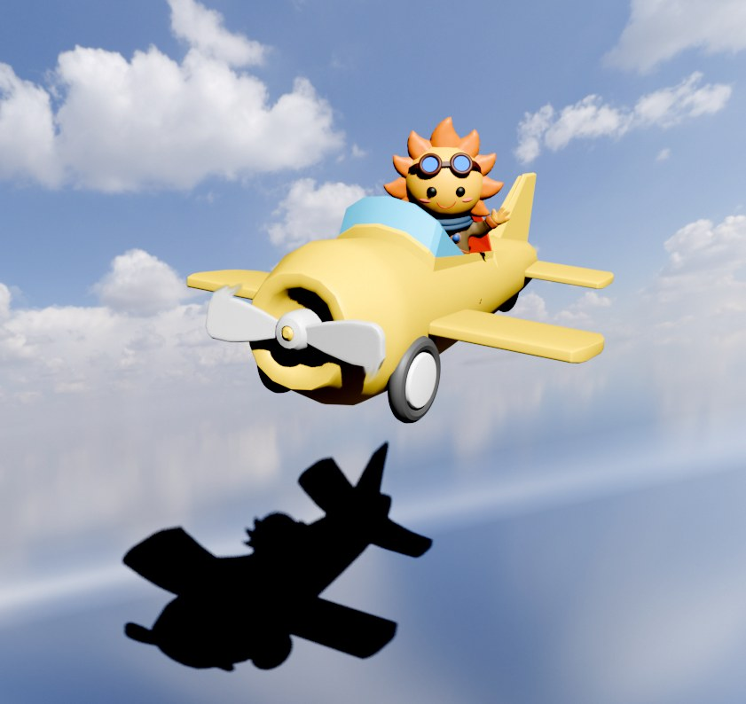
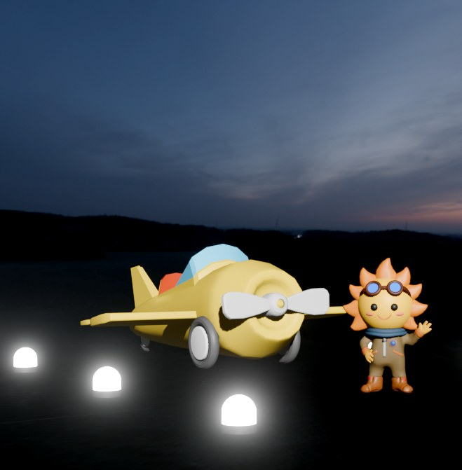

レモニャーゴ
金属表現と、鋭利な目元、無機質さの中に生命感を宿す試み。
3F ― 3D CHARACTER MODELING
FROM ILLUSTRATION TO FORM
キャラクターのイラストを立体化。デザイナーが描いた線を裏切らないように、表情・質感・重心のひとつひとつを立体として再構築します。ゲーム、フィギュア原型、VRアバターなど、平面から立体への橋渡しを承ります。

レモニャーゴ
金属表現と、鋭利な目元、無機質さの中に生命感を宿す試み。

レモニャール
愛らしい輪郭の裏には、もう一つの気配。影は、もう一人の姿を映している。

レモニャーコ
悪を思わせるその容姿とは裏腹に、レモニャーゴへの健気な愛を秘めている。

お弟子太陽ちゃん空を飛ぶ(昼)
ゴーグルをつけて、黄色いプロペラ機で青空へ。操縦席から手を振る笑顔が、まっすぐな明るさを伝えてくれる。「お弟子太陽ちゃん」は、Geminiが自らつけた愛称。

お弟子太陽ちゃん空を飛ぶ(夕暮れ)
日が暮れた滑走路で、飛び立つ前のひととき。足元のライトに照らされて、同じ笑顔が昼とは違う表情に見える。
このジャンルのお問い合わせ・お仕事依頼は、件名にジャンルを記入の上、ここからお願いします。
お問い合わせする メールが開かない場合は、こちらへ直接お送りください:sun00shigeki@yahoo.co.jp